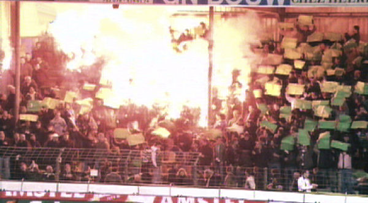
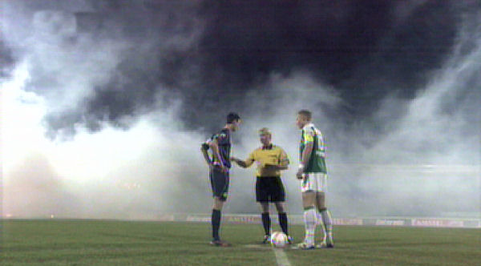
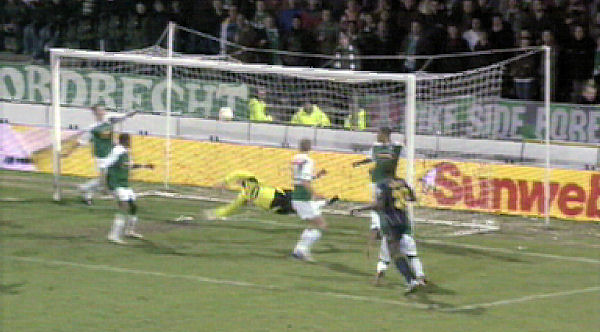
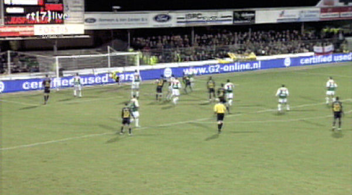
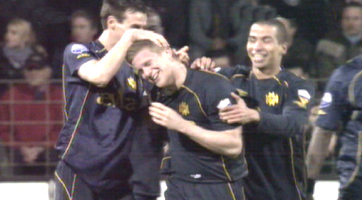
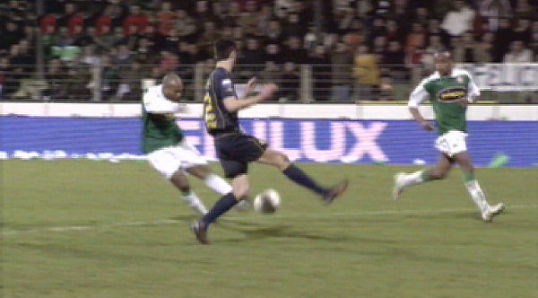
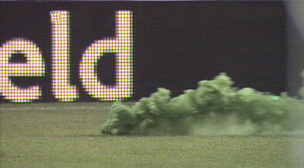
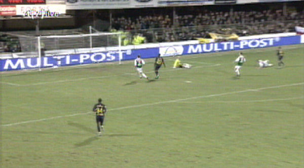
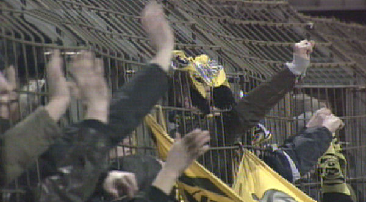
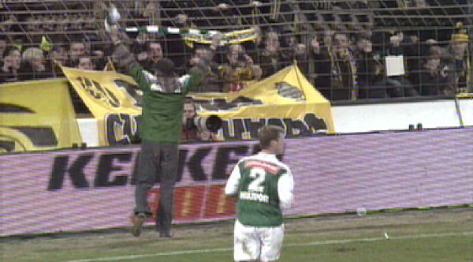

De sfeer zit er goed in aan de Krommedijk.

Bij de toss zijn er nog volop rookvlagen.

Lamah tikt de bal achter doelman Rensen uit een corner: 0-1, (28').

Een vrije trap van De Jong belandt onaangeroerd in het doel: 0-2, (50').

Felicitaties voor de doelpuntenmaker.

Invaller Muhamadu knalt de bal via de benen van de Fauw achter Castro: 1-2,
(60').

Het tifo-team van Dordrecht blijkt uitermate vakkundig in het leggen van
rookgordijnen.

De krachten van Dordrecht vloeien weg en Roda beslist de wedstrijd via een
diagonaal schot van Hadouir:
1-3, (82').

Feest bij de gekooide Roda-supporters.

Een Dordts bijdehantje klimt over het hekwerk en loopt naar het Roda-vak om
een beetje te provoceren.
SV is onderweg....
Door dit resultaat plaatst Roda zich voor de halve finale
waarin de tegenstander Quick Boys, Feyenoord,
NAC, FC Zwolle of Heracles is.